Programming Language Interstices
Rohit Goswami
Created: 2021-09-09 Thu 12:52
Brief Introduction
Hello!
- Find me here: https://rgoswami.me
- Who?
- Rohit Goswami MInstP
- Doctoral Researcher, University of Iceland, Faculty of Physical Sciences
- Rohit Goswami MInstP


Logistics
- All contents are hosted on GitHub
- Slides are in
presentations/lesHouches21
- Slides are in
- Questions are welcome anytime
Programming Languages
Motivation
“If a program or package (the words are used interchangeably) is to have a long life and to be of wide application in its field, it is essential for it to be easily moved from one machine to another.
It used to be common to dismiss such movement with the statement, ‘There is no such thing as a machine-independent program.’
Nonetheless, a great many packages do now move from one machine to another”[lyonUsingAnsFortran1980]
–> Through the magic of automated coding and standards
Language Standards
“The standard is the contract between the compiler writer and the application developer.”[clermanModernFortranStyle2012]
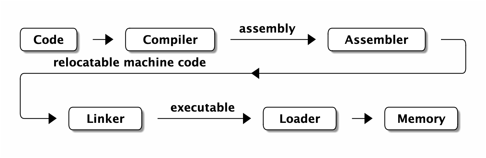
- Sadly interpreters are not really Code -> Memory
- Python itself is an interpreter which is commonly implemented in C
Changing Standards
character(10) BLAH*8 character*8 :: BLAH_ONE(10) character(8) :: BLAH_ONE(10)
#!/usr/bin/env python print("Hello World") print "Hello World"

F77 ∉ F90 always
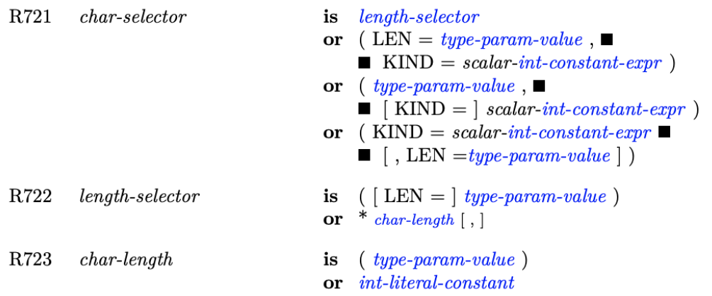
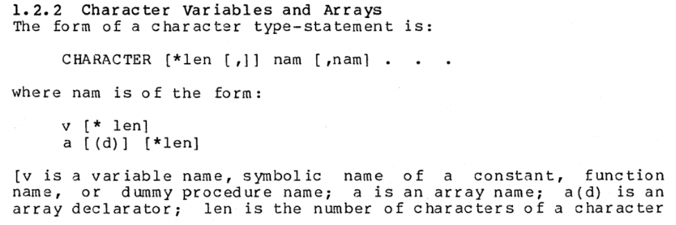
LFortran
Introduction
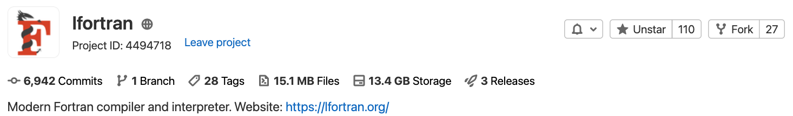
| Language | Files | Lines | Code | Comments | Blanks |
|---|---|---|---|---|---|
| C | 3 | 1023 | 694 | 191 | 138 |
| C Header | 57 | 14237 | 11416 | 1041 | 1780 |
| CMake | 11 | 430 | 361 | 16 | 53 |
| C++ | 54 | 30745 | 26911 | 1560 | 2274 |
| C++ Header | 1 | 8938 | 8297 | 348 | 293 |
| FORTRAN | 20 | 1738 | 1344 | 174 | 220 |
| Python | 2 | 224 | 191 | 4 | 29 |
| Total | 148 | 57335 | 49214 | 3334 | 4787 |
Structure
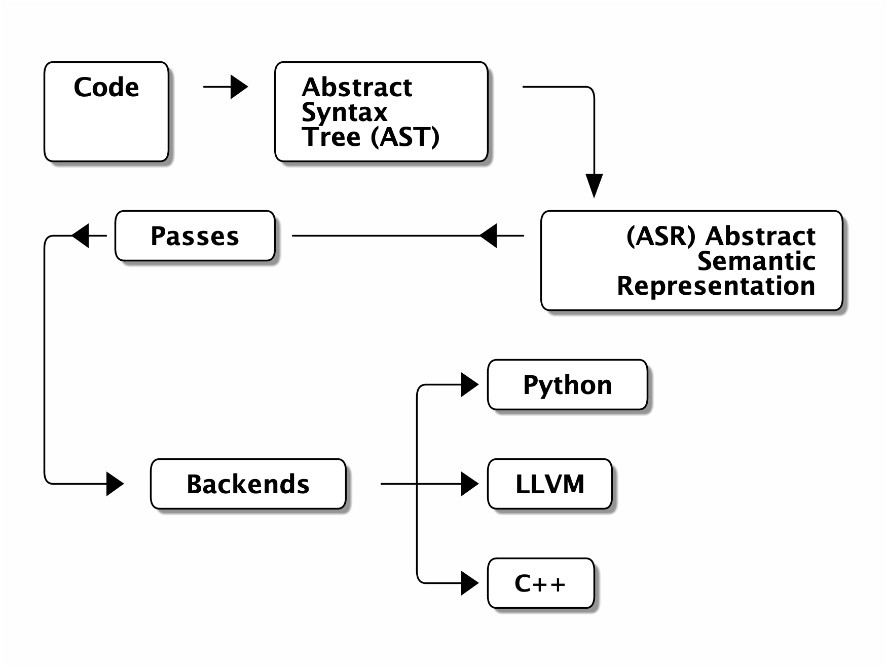
Features
- Runtime Libraries
- Pure Fortran | Impure
- ASR
- Guarantees compilation –> Wrappers
- Parser
- Currently almost all of F2018; including F77
- LLVM
- Canonical backend, includes compile time evaluated expressions
- Jupyter
- Native execution as a kernel
Practical Matters
Numerical Methods 101
- Numerical stability issues
- Floating Point Numbers IEEE 754 [goldbergWhatEveryComputer1991]
- Convergence can be tied to machine epsilon….
- Or a magic number
(1𝑒−5,1𝑒−16) - Or Chemical/Spectroscopic accuracy
- Or a magic number
program main print*, tiny(0.d0) end program
2.2250738585072014e-308
Yawn
“I don’t care because I use libraries. ”
“I don’t care because I write my own algorithms.”
Implementing Sine
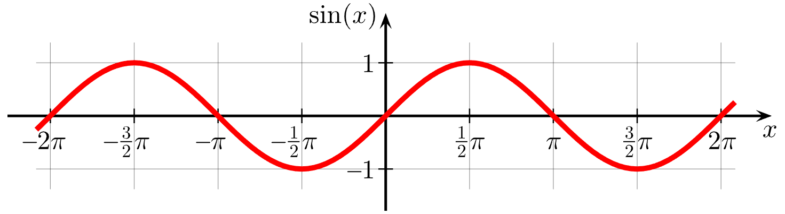
real(dp) function dsin(x) result(r) real(dp), parameter :: pi = 3.1415926535897932384626433832795_dp real(dp), intent(in) :: x ! Assume folded to [-2𝜋,2𝜋] real(dp) :: y, xnew, twoPi, invTwoPi if (abs(x) < pi/2) then r = kernel_dsin(x) else ! fold to pi/2 from https://realtimecollisiondetection.net/blog/?p=9 y = modulo(xnew, 2*pi) y = min(y, pi - y) y = max(y, -pi - y) y = min(y, pi - y) r = kernel_dsin(y) end if end function
Folding I
- Symmetric about
𝜋/2 –>𝑥−𝜋/2
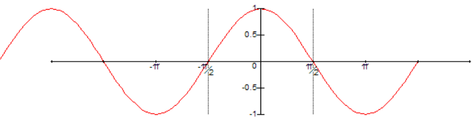
𝑥=−𝑎𝑏𝑠(𝑥)
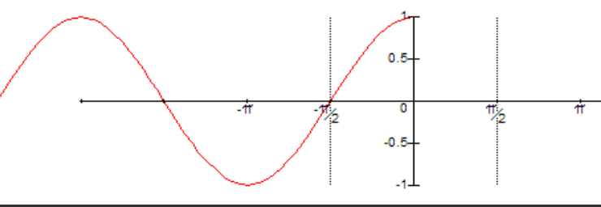
Folding II
𝑥=−𝑎𝑏𝑠(𝑥–𝜋/2)+𝜋/2 ->𝑥=𝑚𝑖𝑛(𝑥,𝜋−𝑥)
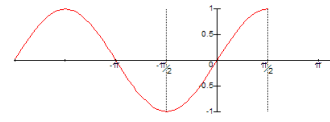
Folding III
- Repeat rightward to get
𝑥=𝑚𝑎𝑥(𝑥,−𝜋−𝑥)
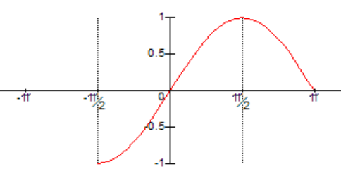
- Complete with
𝑥=𝑚𝑖𝑛(𝑥,𝜋−𝑥)
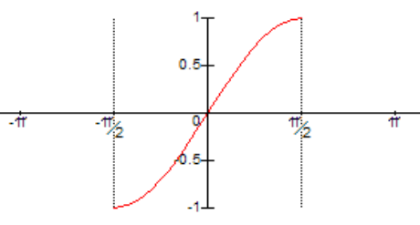
Kernel Sine
nix-shell -p sollya rlwrap rlwrap -A sollya prec=120; f=sin(x); d=[-pi/2;pi/2]; # Use min/max poly p=remez(f,16,d, default,1e-16,1e-30); p; # Returns coefficients # Zero out even terms
! Accurate on [-pi/2,pi/2] to about 1e-16 elemental real(dp) function kernel_dsin2(x) result(res) real(dp), intent(in) :: x real(dp), parameter :: S1 = 0.9999999999999990771_dp real(dp), parameter :: S2 = -0.16666666666664811048_dp real(dp), parameter :: S3 = 8.333333333226519387e-3_dp real(dp), parameter :: S4 = -1.9841269813888534497e-4_dp real(dp), parameter :: S5 = 2.7557315514280769795e-6_dp real(dp), parameter :: S6 = -2.5051823583393710429e-8_dp real(dp), parameter :: S7 = 1.6046585911173017112e-10_dp real(dp), parameter :: S8 = -7.3572396558796051923e-13_dp real(dp) :: z z = x*x res = x * (S1+z*(S2+z*(S3+z*(S4+z*(S5+z* (S6+z*(S7+z*S8))))))) end function
Auxiliary Functions
elemental real(dp) function dmodulo(x, y) result(r) real(dp), intent(in) :: x, y r = x-floor(x/y)*y end function elemental integer function dfloor(x) result(r) real(dp), intent(in) :: x if (x >= 0) then r = x else r = x-1 end if end function elemental real(dp) function dabs(x) result(r) real(dp), intent(in) :: x if (x >= 0) then r = x else r = -x end if end function
Accuracy
With an evenly spaced grid of 0.01:
1𝐸−16 over kernel range−𝜋/2,𝜋/2
1𝐸−16 over[−20,20]
1𝐸−12 from1𝐸5
1𝐸−7 from1𝐸10
Post Mortem
- The problem turned out to be
modulo- IEEE defines a remainder for trignometric functions
ieee754_rem_pio2
- IEEE defines a remainder for trignometric functions
Do not naively assume “handcrafted” algorithms are IEEE 754 accurate
Fortran, C, Python
- F2003
- Introduced the
ISO_C_BINDING - (no term)
- Described in great detail on fortran90.org:
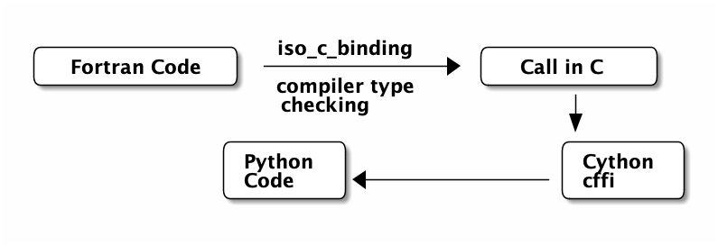
F2PY
History
- Developed by Pearu Peterson [petersonF2PYToolConnecting2009]
- July 9, 1999
f2py.py–> Fortran to Python Interface Generator (FPIG)- January 22, 2000
f2py2e–> Fortran to Python Interface Generator, 2nd edition.- July 19, 2007
numpy.f2py–> f2py2e moved to NumPy project. This is current stable code of f2py.
- Used extensively for F77
Design
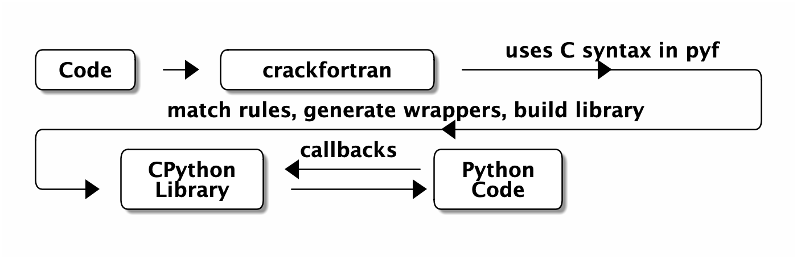
- A best effort wrapper
- Specifications via
.pyfor inline comments - Not a compiler
- Can rewrite code :)
- Specifications via
Roadmap
- Moves about as fast as spectroscopy codes :)
- Also picking up speed in 2021
- Implementing newer standards (90, 95, 2003, 2008, 2018, 2020Y)
- Automating guarantees
- Documentation
Relevance
Writing efficient wrappers without being a language lawyer
Bonus: Reading Code
Reading Code I
main: push rbp mov rbp, rsp mov DWORD PTR [rbp-4], 3 mov eax, 0 pop rbp ret __static_initialization_ and_destruction_0(int, int): push rbp mov rbp, rsp sub rsp, 16 mov DWORD PTR [rbp-4], edi mov DWORD PTR [rbp-8], esi cmp DWORD PTR [rbp-4], 1 jne .L5 cmp DWORD PTR [rbp-8], 65535 jne .L5 mov edi, OFFSET FLAT:_ZStL8 __ioinit
call std::ios_base::Init::Init() [complete object constructor] mov edx, OFFSET FLAT:__dso_handle mov esi, OFFSET FLAT:_ZStL8__ioinit mov edi, OFFSET FLAT:_ZNSt8ios_base4InitD1Ev call __cxa_atexit .L5: nop leave ret _GLOBAL__sub_I_main: push rbp mov rbp, rsp mov esi, 65535 mov edi, 1 call __static_initialization_ and_destruction_0(int, int) pop rbp ret
- But who writes assembly anyway?
Reading Code II
int main () { int D.48918; { int a; a = 3; D.48918 = 0; return D.48918; } D.48918 = 0; return D.48918; } void _GLOBAL__sub_I_main.cpp () { __static_initialization_ and_destruction_0 (1, 65535); }
void __static_initialization_ and_destruction_0 (int __initialize_p, int __priority) { if (__initialize_p == 1) goto <D.48920>; else goto <D.48921>; <D.48920>: if (__priority == 65535) goto <D.48922>; else goto <D.48923>; <D.48922>: std::ios_base::Init::Init (&__ioinit); __cxxabiv1::__cxa_atexit (__dt_comp , &__ioinit, &__dso_handle); goto <D.48924>; <D.48923>: <D.48924>: goto <D.48925>; <D.48921>: <D.48925>: }
- GIMPLE is an internal
gccrepresentation…
Reading Code III
#include<iostream> int main() { int a=3; return 0; }
- Better for most people, still a bit lacking for novices
- Assigning an integer
g++ main.cpp -o file
- Produces a
filebinary which can be run as:
./file
- Output
- There is no output, but an assignment of an integer with value 3 takes place
- What about different languages?
Reading Code IV
- Maybe
gccis just an ugly compiler…
program main integer :: x = 3 + 6 print *, x end program
lfortranhas a nicer intermediate structure
conda create -n lf
conda activate lf
conda install lfortran \
-c conda-forge
lfortran --show-asr consint.f90
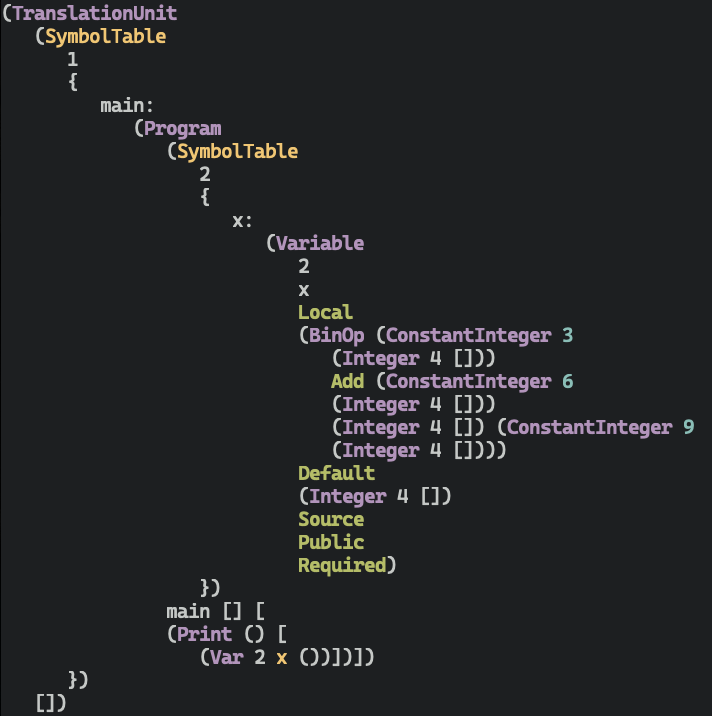
Conclusions
Omitted Topics
- Web development and design
- Including frameworks and UX
- Continuous integration
- How to ensure documentation is coupled to working code
- Benchmarking
- Demonstrating code superiority
- Code Review Practices
- Scrum and teamwork
- HPC and Parallelism
- Efficient data usage and algorithms
- Build systems
- Portability
- Science
- Also algorithms
- Usage examples
- For
f2pyandlfortran
Key Takeaways
- Document at every level
- Write modern Fortran
- Use
ISO_C_BINDINGS - Use
IEEEstandards
- Use
- When using F77
- Use
f2py
- Use
- Don’t be too clever
- Don’t be too accurate
The End
Acknowledgements

- Prof. Hannes Jónsson as my supervisor, Prof. Birgir Hrafnkelsson as my co-supervisor, and my committee member Dr. Elvar Jonsson
- Dr. Ondřej Čertík at Los Alamos National Laboratory
- Quansight Labs (Dr. Ralf Gommers, Dr. Melissa Weber Mendonça and Dr. Pearu Peterson)
- Family, pets, Groupmembers, audience
Bibliography
- [ChevillardJoldesLauter2010] Chevillard, Joldeş & Lauter, Sollya: An Environment for the Development of Numerical Codes, 28-31, in in: Mathematical Software - ICMS 2010, edited by Fukuda, van der Hoeven, Joswig & Takayama, Springer
- [clermanModernFortranStyle2012] Clerman & Spector, Modern Fortran: Style and Usage, Cambridge University Press .
- [goldbergWhatEveryComputer1991] Goldberg, What Every Computer Scientist Should Know about Floating-Point Arithmetic, ACM Computing Surveys, 23(1), 5-48 . link. doi.
- [lyonUsingAnsFortran1980] Lyon, Using Ans Fortran, National Bureau of Standards .
- [petersonF2PYToolConnecting2009] Peterson, F2PY: A Tool for Connecting Fortran and Python Programs, International Journal of Computational Science and Engineering, 4(4), 296 . link. doi.
- [sebilleauMsSpec1MultipleScattering2011] Sébilleau, Natoli, Gavaza, Zhao, Da Pieve & Hatada, MsSpec-1.0: A Multiple Scattering Package for Electron Spectroscopies in Material Science, Computer Physics Communications, 182(12), 2567-2579 . link. doi.
- [virtanenSciPyFundamentalAlgorithms2020] Virtanen, Gommers, Oliphant, Haberland, Reddy, Cournapeau, Burovski, Peterson, Weckesser, Bright, van der Walt, Brett, Wilson, Millman, Mayorov, Nelson, Jones, Kern, Larson, Carey, Polat, Feng, Moore, VanderPlas, Laxalde, Perktold, Cimrman, Henriksen, Quintero, Harris, Archibald, Ribeiro, Pedregosa & van Mulbregt, SciPy 1.0: Fundamental Algorithms for Scientific Computing in Python, Nature Methods, 17(3), 261-272 . link. doi.
- [waltNumPyArrayStructure2011] van der Walt, Colbert & Varoquaux, The NumPy Array: A Structure for Efficient Numerical Computation, Computing in Science Engineering, 13(2), 22-30 . doi.